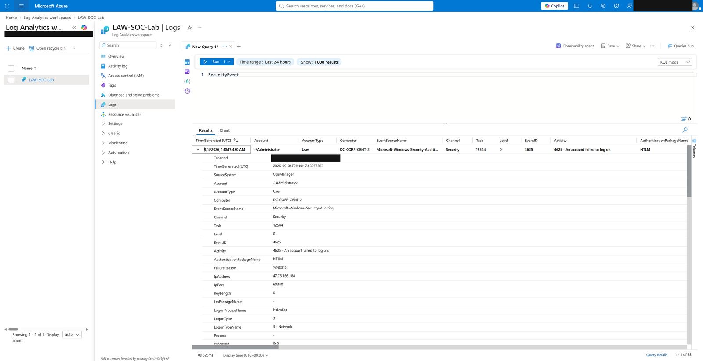
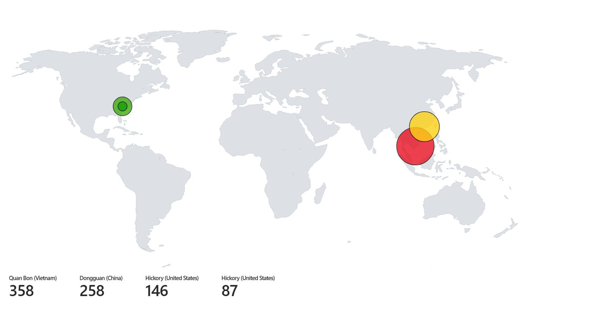
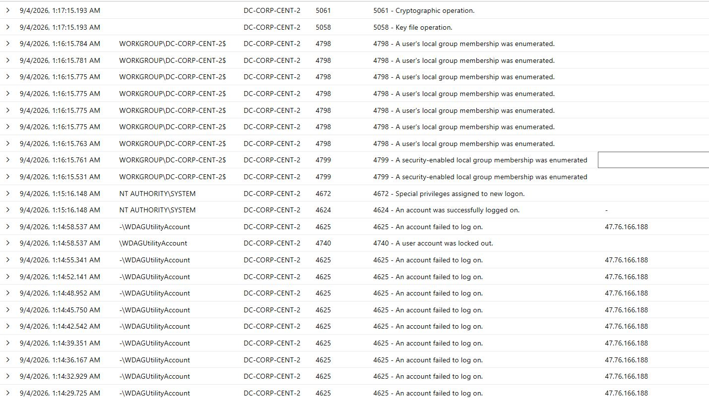

AZURE / GUIDED PERSONAL LAB
Following failed logins
from a VM to a map
I built a Windows honeypot in Azure to practice collecting and reading security logs. A honeypot is a computer deliberately exposed to attract activity that can be observed. The saved map shows 849 failed logons across four source IP entries.
Start with a resource group and network
I created the SOC-Lab resource group, a container that keeps related Azure resources together. Inside it, I created VNet-SOC-Lab, a virtual network that gives cloud computers a network to connect to.
The network contained a default subnet, a smaller section of its address range. The VM would join this subnet and receive a private IP address for communication within the network.
Create the VM and expose the honeypot
I deployed DC-CORP-CENT-2, a Windows 11 Pro virtual machine in Central US, and connected it to the subnet. A VM is a computer running on cloud hardware. Its public IP made it reachable from the internet; Remote Desktop Protocol (RDP) let me sign in and use its desktop.
I changed the network security group (NSG) to allow all inbound traffic. An NSG controls which network connections Azure allows. Inside Windows, I also disabled Windows Defender Firewall for the Domain, Private, and Public profiles.
Learning point: Azure network rules and the Windows firewall are separate layers. These permissive settings were intentional for this honeypot exercise; a normal work computer should have restricted access.
Find failed logins in Windows
Following the tutorial, I made a few unsuccessful login attempts, then checked Event Viewer → Windows Logs → Security on the VM. Event Viewer is Windows’ built-in tool for reading event records.
I looked for event ID 4625, meaning an account failed to log on. This established what the event looked like on the computer before collecting it in Azure. A failed login can be a typo, so the source address, account, timing, and repetition matter too. Microsoft’s 4625 reference ↗
Give the logs a central home
I created LAW-SOC-Lab, a Log Analytics workspace. This is the central place where Azure stores collected logs so they can be searched together.
I enabled Microsoft Sentinel on that workspace. Sentinel is a SIEM (security information and event management) tool: it helps analysts search security data, investigate activity, and configure detections. This lab focused on collecting, querying, and visualizing logs.
Connect the VM through Azure Monitor Agent
In Sentinel’s Content Hub, I installed the Windows Security Events solution, then used its Windows Security Events via AMA connector. A connector provides the setup for bringing a particular kind of data into the workspace.
I created DCR-Windows, a data collection rule (DCR), selected the VM, and followed the tutorial’s selection of all Security events. The rule tells the agent what to collect and which workspace to send it to.
This setup installs Azure Monitor Agent (AMA) on the VM. Azure Monitor is Microsoft’s monitoring service; AMA is the software on the computer that collects and sends its logs. I checked for records in the workspace’s SecurityEvent table to verify collection. Microsoft’s connector guide ↗
- Windows VMSecurity event log
- AMA + DCRCollect and send
- Log AnalyticsSecurityEvent table
- SentinelInvestigate those logs
Remember: Sentinel uses the logs in its connected workspace. This setup does not need another agent to copy them from Log Analytics into Sentinel.
Use a short query to read the activity
In the workspace’s Logs view, I used Kusto Query Language (KQL), the query language for filtering and summarizing these records. This query keeps failed logins and displays the fields I want to review:
SecurityEvent
| where EventID == 4625
| project TimeGenerated, Account, Computer, EventID, IpAddress
| order by TimeGenerated descwhere filters rows; project chooses columns; order by sorts them. EventID is case-sensitive—EventId is a different name.

Add location context and build the map
The tutorial used a Sentinel watchlist, an imported reference table, to match source IPs to locations. My saved query used externaldata to read the supplied location CSV from Azure Blob Storage instead. ipv4_lookup matched each IP to a network range in that file. How externaldata works ↗
I adapted the supplied map template in an Azure Monitor workbook, a report that turns query results into visuals. The workbook used the same workspace logs and grouped failed logons by source IP. The location dataset and map template were supplied resources.
Learning point: location data adds context to an IP address. It does not establish who operated it or where that person was physically located.
THE SAVED RESULT
Repeated failures and an account lockout

The records show repeated failures targeting Windows account names, including Administrator and WDAGUtilityAccount. Attempts spaced roughly three seconds apart from the same IP are consistent with automated guessing. A saved result also shows 4740, an account lockout, alongside repeated failures.
View the failed logons and lockout evidence

What this supports: the VM received failed login attempts, and the collection and mapping worked. These screenshots alone do not establish whether every login attempt failed. In an investigation, I would also review successful logins and compare the account, source address, time, and logon type.
QUICK RECALL
The things I want to remember
| Look for | Meaning |
|---|---|
| 4625 | A failed login. Review the pattern and surrounding context. |
| 4624 | A successful login. It can be normal user or system activity. |
| 4740 | An account was locked out. |
| Logon type 3 | Network logon. This value alone does not identify the application. |
| Logon type 10 | Remote interactive logon, such as Remote Desktop. |
Event references: 4625 and logon types, 4624, 4740.
If logs are missing: check that the VM’s agent installed, the DCR selects the correct VM and workspace, and the query’s time range covers the activity. Allow for collection delay, then verify that records actually arrive.
When finishing a cloud lab: save the evidence, remove the exposed resources, and check for remaining billable resources. Stopping a VM alone can leave disks and other resources behind.
Recap
“I followed a guided Azure lab to build a Windows honeypot and collect its security logs. I used Azure Monitor Agent and a data collection rule to send events to a Log Analytics workspace connected to Sentinel. I practiced filtering failed logins with KQL and adapted a workbook to map source IPs. My main takeaway was learning how a Windows event becomes something I can investigate—and why a failed login or a point on a map needs context.”
This was a personal learning exercise in setup, log review, and visualization. It did not include building automated detection rules or carrying out a production incident response.